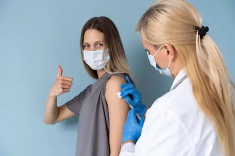
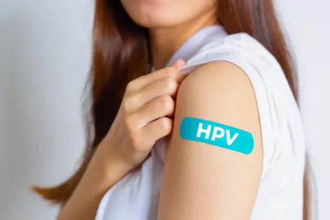
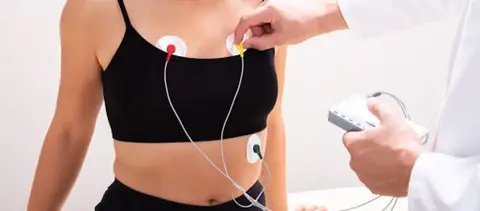
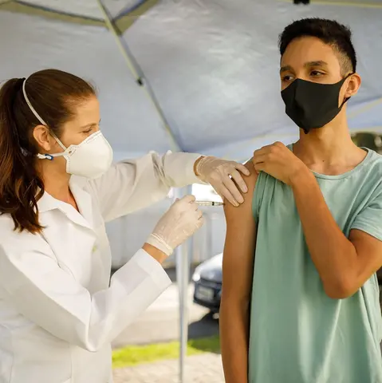
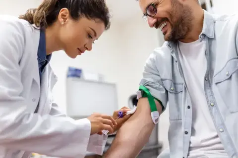

Detecção precoce
Reconheça sinais de alerta e procure orientação profissional.
Conheça cuidados preventivos e converse com profissionais de saúde sobre suas necessidades.
A prevenção envolve vacinação, hábitos saudáveis e acompanhamento profissional. A indicação de exames depende da idade, dos sintomas, do histórico familiar e de outros fatores individuais.
Reconheça sinais de alerta e procure orientação profissional.

Compartilhe informações confiáveis e incentive o acompanhamento.

Construa uma rotina de cuidados adequada à sua realidade.
As recomendações abaixo são informativas. A indicação e a frequência dos exames devem ser definidas com a equipe de saúde.



O acompanhamento preventivo considera sintomas, histórico familiar, condições de saúde e decisões compartilhadas com profissionais.


Observe alterações persistentes, como nódulos, mudanças na pele ou saída espontânea de secreção, e procure avaliação profissional.
Dor, inchaço, nódulos ou alterações urinárias devem ser avaliados por profissionais de saúde, sem substituir o acompanhamento clínico.
Consulte a unidade de saúde para atualizar sua carteira de vacinação de acordo com o calendário nacional e suas condições clínicas.
Cuide do sono, reserve momentos de descanso e procure apoio profissional sempre que perceber sofrimento emocional persistente.
Conteúdo educativo. Estas informações não substituem consulta, diagnóstico ou orientação individual de profissionais de saúde.